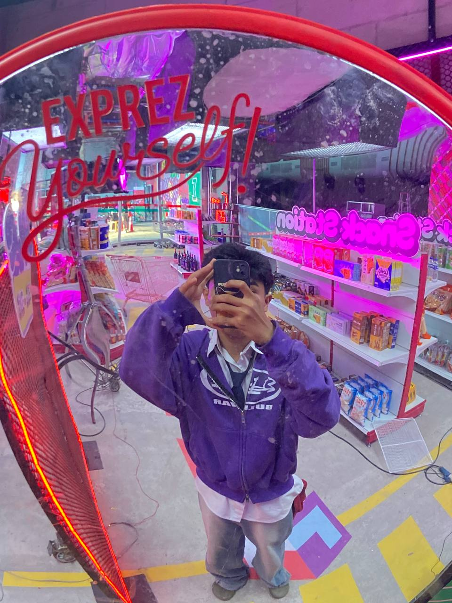

Travel Writer & Photographer
Born in Phnom Penh. Raised between London and Siem Reap. Writing about Cambodia since 2019 — slowly, honestly, without a sponsored post in sight.

Kampot, Cambodia — 2023. Photo by David .
Khmer Wanderer began as a private notebook. I was 26, freshly returned from my first extended stay in Cambodia, with notebooks full of things I couldn't figure out where to put.
I started publishing online in 2019 — partly to process what I'd experienced, partly because I kept seeing the same five articles about Angkor Wat every time I searched for something more specific. There was a gap between the Cambodia I was experiencing and the Cambodia being written about.
Today this site has 68 published pieces, a monthly newsletter with 4,200 subscribers, and an archive of honest writing about a country I genuinely love. Nothing here is sponsored. No affiliate links. No brand trips. Just observation and honesty.
I split my time between Phnom Penh and London, return to Cambodia at least twice a year, and have now visited all 23 provinces. I speak conversational Khmer.
I don't do two-week Cambodia roundtrips with ten destinations. I stay in one place for weeks at a time. Depth over coverage. Always.
I've turned down tourism board trips and hotel collaborations. Every recommendation here I've paid for and genuinely believe in.
Cambodia has a difficult recent history. The Khmer Rouge, the landmine problem. I write about it directly because pretending it isn't there does no one any good.
Knowing even fifty words of Khmer changed my relationship with Cambodia entirely. I write about this because I think it matters.
10% of any revenue this site generates goes directly to LICADHO Cambodia, a human rights organisation I trust.
I use a 35mm film camera for most trips. I don't post-process into postcards. The photos on this site look like Cambodia looks.
Two weeks in Siem Reap and Phnom Penh. Fell completely in love. Returned six months later with a one-way ticket.
First post: a 3,000-word account of Beng Mealea temple. Six readers. One became a close friend.
COVID borders close. Four months in Kampot. Wrote twelve pieces. Learned to cook Khmer food properly.
Entirely word-of-mouth. No ads. Still the achievement I'm most proud of on this project.
Preah Vihear was the last. Six-hour dirt road by motorbike. The clifftop temple made it absolutely worth it.
Still independent. Still unsponsored. Still writing slowly about a country that rewards patience.
No algorithm. No brand deals. One story a month, straight to your inbox.